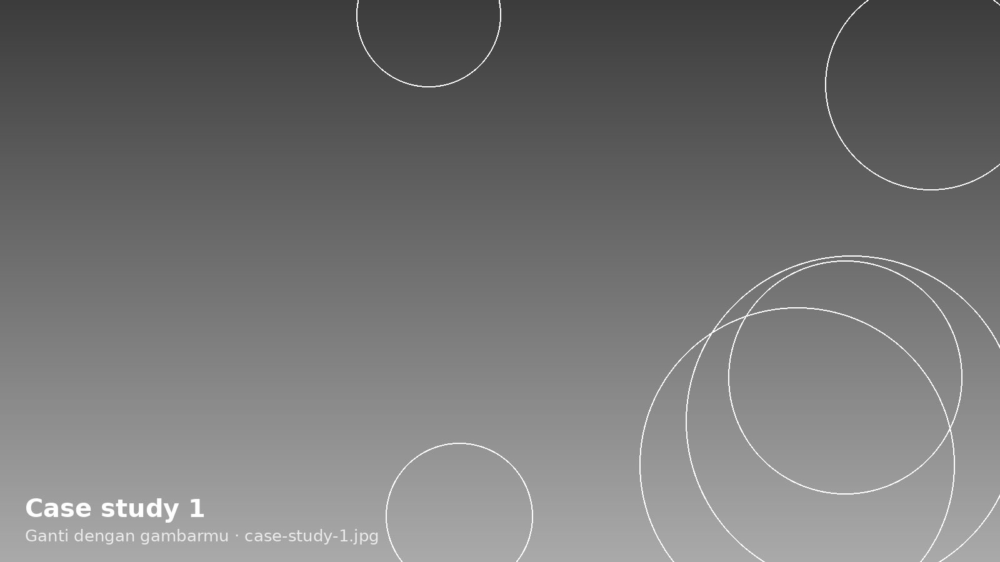

Review sepatu lari lokal
YouTube, 12 menit. Retensi rata-rata naik dari 31% ke 48%.
Video editor yang bikin konten short-form ditonton sampai habis. Dua tahun mengedit untuk UMKM dan kreator di Instagram dan YouTube.
Terbuka untuk posisi Video Editor di creative agency, Jakarta
YouTube, 12 menit. Retensi rata-rata naik dari 31% ke 48%.
Instagram Reels, 28 detik. 180 ribu views dalam seminggu.
YouTube, 9 menit. Color grading dan sound design.
Perencanaan shot sebelum produksi untuk brand skincare.
TikTok, 45 detik. Seri 10 video untuk kreator.
Naskah dan shot list untuk iklan brand sepatu lokal.
Hook (0–3 detik): Close-up sepatu dipakai melangkah di aspal basah. Teks: “Hujan bukan alasan.”
Isi (3–22 detik): Tiga potongan cepat, tiap potongan satu keunggulan: sol anti-licin, bahan cepat kering, ringan.
Penutup (22–30 detik): Produk dan harga di layar, CTA “Cek di keranjang kuning”.

Kanal ini rutin mengunggah review sepatu, tapi penonton banyak yang berhenti di menit kedua. Saya diminta memegang editing selama tiga bulan.
Footage diambil satu kamera dengan pencahayaan seadanya, dan pembukaan videonya selalu dimulai dengan salam panjang sebelum masuk ke produk.
Saya memindahkan momen paling menarik ke 10 detik pertama sebagai hook, memotong jeda bicara, dan menambahkan B-roll close-up tiap pergantian topik. Alasannya, data retensi menunjukkan penonton keluar tepat saat layar terlalu lama menampilkan wajah tanpa produk.
48% retensi rata-rata, naik dari 31% dalam tiga bulan. Format ini kemudian dipakai sebagai standar untuk semua video kanal.

Saya mulai mengedit video saat kuliah, lalu dua tahun terakhir bekerja freelance untuk UMKM, kreator, dan brand lokal. Saya paling senang mengerjakan konten yang harus menjelaskan sesuatu dengan cepat tanpa terasa seperti iklan.
Sekarang saya ingin bergabung dengan tim kreatif di agency, supaya bisa belajar dari proyek yang lebih besar dan bekerja bareng desainer dan penulis.